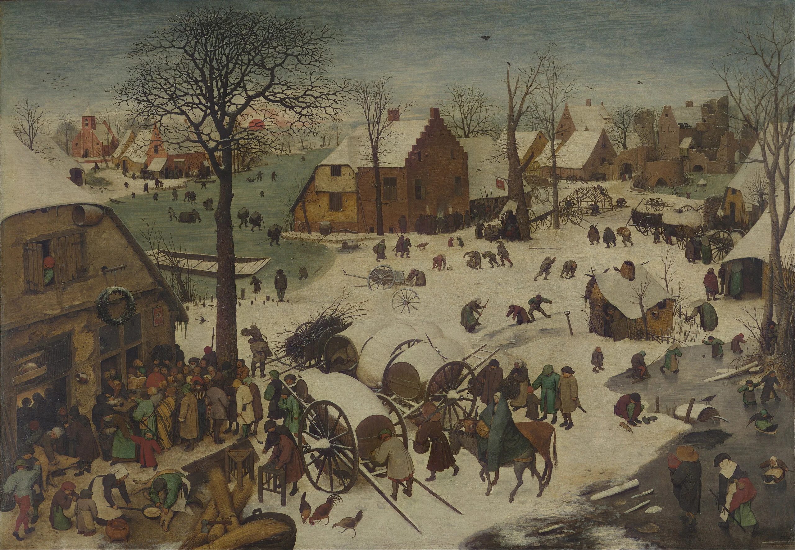
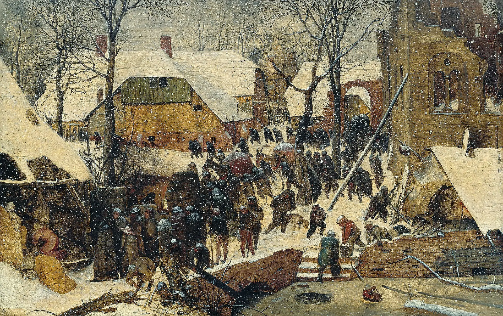
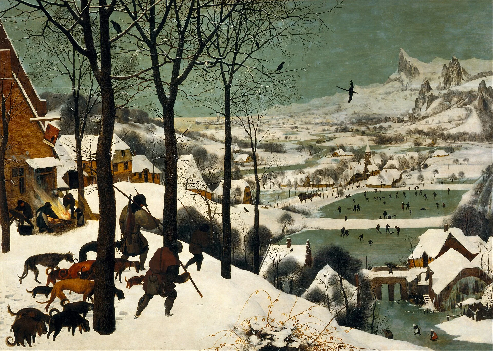
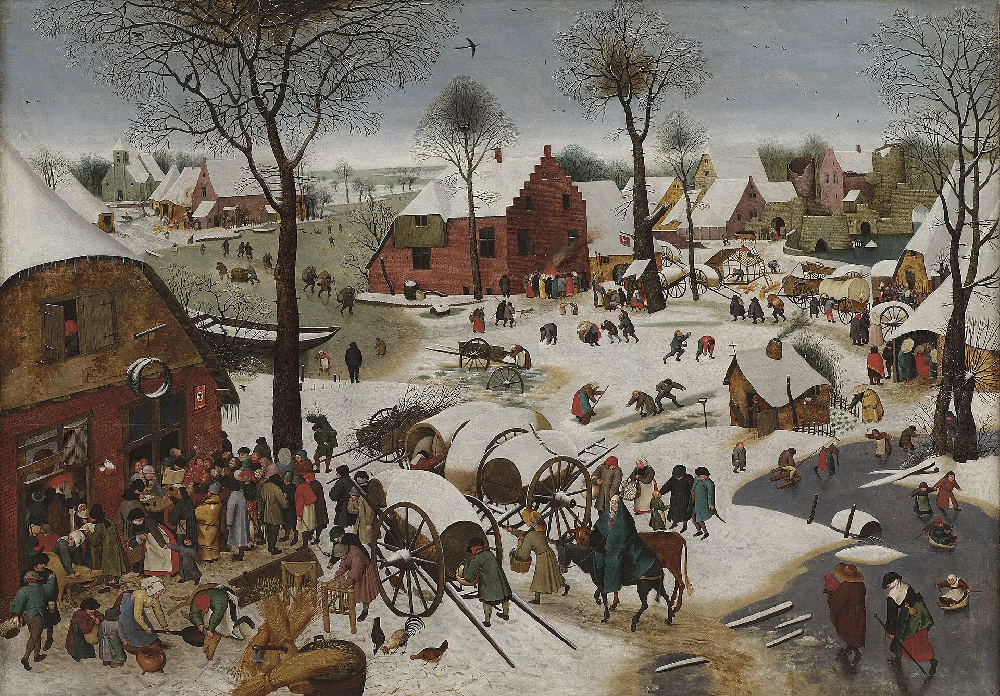
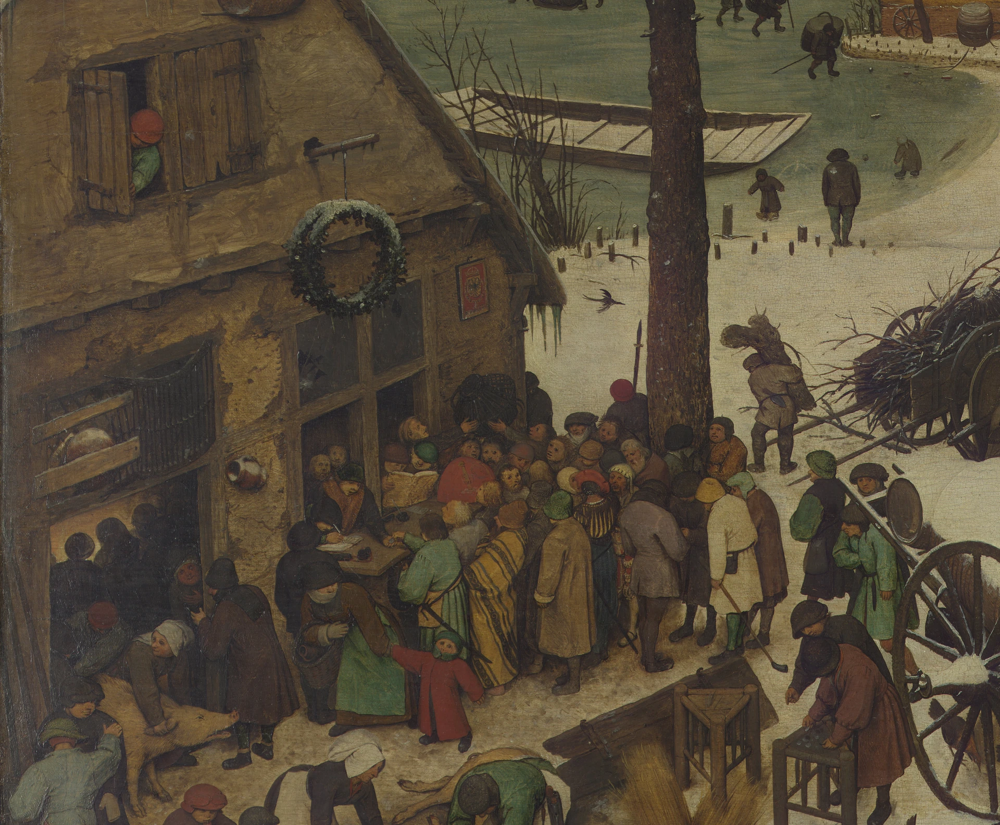

아직 펼치지 않은 카드성탄의 밤을 그린 그림 · 4베들레헴의 인구 조사눈 덮인 마을, 이 많은 사람들 사이에 마리아와 요셉이 있어요. 찾을 수 있나요?숨은그림찾기! 나귀를 탄 엄마 마리아는 어디 있을까?
1566년브라반트(지금의 벨기에) · 지금은 브뤼셀 왕립 미술관
베들레헴의 인구 조사
해가 낮게 걸린 겨울, 브라반트의 한 마을이 이름을 적으러 온 사람들로 붐벼요. 그 틈으로 마리아와 요셉이 조용히 지나가요. 그림 속 일곱 곳을 하나씩 눌러, 두 사람과 마을 구석구석을 찾아보세요.
눈 내린 마을에 사람이 아주 많아. 그 틈에 나귀 탄 엄마 마리아와 요셉 아저씨가 숨어 있대. 같이 찾아볼까?
검수 전 시안이에요(기준서 1판). 장면에는 브뤼셀 왕립 미술관과 다른 미술관의 해설에 있는 것만 옮겼고, 풀이가 갈리는 곳은 그렇다고 밝혔어요. 상상은 ‘눈 감고 상상해 보기’에만 썼어요.
시안 확인용카드 단계 미리 보기
1
브뤼헐의 눈 그림
이 그림을 그리기 세 해 전인 1563년, 브뤼헐은 동방박사들이 아기를 찾아온 이야기를 눈송이가 펑펑 내리는 마을로 그렸어요. 이 그림을 가진 스위스 미술관은 ‘유럽 그림에서 처음으로 떨어지는 눈송이를 그린 그림’이라고 소개해요.
1565년에는 사냥꾼들이 지친 개들을 데리고 눈 덮인 마을로 돌아오는 그림을 그렸어요. 빈 미술사 박물관은 이 그림을 유럽 그림의 첫 겨울 풍경으로 꼽아요.


그리고 1566년, 브뤼헐은 성탄 이야기의 첫머리인 ‘인구 조사’를 그가 살던 브라반트의 눈 덮인 마을로 옮겨 그렸어요.
이 화가는 눈 오는 마을 그림을 여러 장 그렸대. 눈송이가 펑펑 내리는 그림도 있어!
물어보기눈 오는 날 밖에 나가면 너는 뭐부터 하고 싶어?
2
마을 틈의 두 사람
브뤼셀 왕립 미술관은 브뤼헐의 그림에서 자주 그렇듯, 이 마을도 높은 곳에서 내려다보게 그렸다고 설명해요. 마치 지붕 위에서 마을을 보는 것 같아요.
사람들은 줄을 서고, 짐을 나르고, 얼음 위에서 놀아요. 그 틈 어딘가에 성경 속 두 사람이 있어요. 일곱 곳을 하나씩 눌러 찾아보세요.
그림 속 숫자를 하나씩 눌러 보세요. ‘가까이 보기’를 누르면 그 자리를 크게 볼 수 있어요.
피터르 브뤼헐(아버지), 「베들레헴의 인구 조사」, 1566년 · 브뤼셀 왕립 미술관 · 피터르 브뤼헐(아버지) 그림 · 퍼블릭 도메인 · 위키미디어 공용(Google Art Project)
그림 위의 숫자나 아래 번호를 눌러 보세요.
해와 여관, 바퀴와 얼음판을 지나, 붐비는 마을 틈에서 마리아와 요셉까지 찾았어요.
그림 속에 숫자 단추가 일곱 개 있어. 하나씩 눌러서 마을 구경을 하자!
물어보기마리아와 요셉은 몇 번에 숨어 있을까?
3
아버지의 그림, 아들의 그림
아버지 브뤼헐의 그림은 아들 피터르 브뤼헐 2세의 화실에서 여러 번 다시 그려졌어요. 브뤼셀 왕립 미술관은 알려진 복사본이 열세 점이고, 그 가운데 세 점에 아들의 서명과 해가 적혀 있다고 소개해요.
미술관이 가진 아들의 복사본에서는 스케이트 끈을 매는 사람이 빠졌고, 가운데 수레바퀴가 곡식 자루처럼 그려졌어요. 그래서 미술관은 아들이 원본을 곁에 두고 그리지 않았을 거라고 봐요.

위의 두 그림 가운데 오른쪽은 네덜란드 보네판텐 미술관에 있는 또 다른 복사본이에요. 이 복사본에서는 나뭇가지 사이의 붉은 해도, 얼음판 가의 스케이트 매는 사람도 보이지 않아요. 탭을 바꿔 가며 견주어 보세요.
아빠가 그린 그림을 아들이 따라 그렸대. 그런데 빠진 게 있대!
물어보기두 그림에서 다른 곳을 하나 찾아볼래?
4
여관에 있을 곳이 없어
누가복음 2장 7절은 마리아가 아기를 낳아 구유에 뉘었다고 적어요. 여관에 그들이 있을 곳이 없었기 때문이에요.
브뤼헐의 여관 앞도 이름을 적고 돈을 내려는 사람들로 북적여요. 보네판텐 미술관의 해설은 이 여관의 이름을 ‘초록 화환(In de groene krans)’이라고 적어요. 처마 아래에도 둥근 초록 화환이 걸려 있어요.

그림 속 마리아와 요셉은 아직 여관에 닿지 않았어요. 성경에서 요셉은 마리아와 함께 이름을 올리러 고향 베들레헴에 왔어요.
내가 이 붐비는 여관의 주인이라면, 늦게 도착한 마리아와 요셉에게 무엇을 해 주고 싶나요?
여관 앞에 사람들이 바글바글해. 방이 하나도 없었대.
물어보기네가 여관 주인이라면 늦게 온 손님에게 어떻게 해 줄래?
눈 감고 상상해 보기
해가 낮게 걸린 겨울날, 발밑에서 눈이 뽀드득 소리를 내요. 여관 창가에서는 이름을 부르는 소리와 동전 소리가 들리고, 얼음판에서는 아이들 웃음소리가 나요. 입김이 하얗게 피어오르는 길로, 나귀 한 마리가 천천히 지나가요. 아무도 고개를 돌리지 않아요.
눈을 감아 봐. 뽀드득뽀드득 눈 밟는 소리. 얼음판에서 친구들이 깔깔 웃어. 나귀가 또각또각 지나가는데, 아무도 몰라봐.
나의 자리
바쁜 하루 속에서, 내가 미처 알아보지 못하고 지나친 사람은 없었나요?
오늘 길에서 본 사람 중에 기억나는 사람이 있어?
마음에 닿는 한 줄을 고르거나 직접 써 보세요. 한 줄을 남기면 이 자리의 도장이 찍혀요. 이 기기에만 저장돼요.
더 깊이
궁금한 칸만 펼쳐 읽어도 괜찮아요.
알고 보면
크기와 재료 참나무 판에 그렸고, 세로 115.5cm, 가로 163.5cm예요. 브뤼셀 왕립 미술관이 1902년 안트베르펜 경매에서 사들였어요.
폐허와 교회 미술관 해설은 오른쪽의 무너진 건물과 물 건너 교회를 지나간 때와 지금, 옛 믿음과 그리스도교로 나란히 읽기도 해요.
마을의 겨울 살림 미술관은 곡식 자루를 싣는 짐수레, 불가에서 몸을 녹이는 사람들, 팽이를 치거나 얼음을 지치는 아이들을 하나하나 짚어요.
기록마다 다른 점
해는 지고 있을까, 뜨고 있을까 해 질 녘의 마을이라고 쓴 글도 있어요. 브뤼셀 왕립 미술관의 해설은 지평선에서 해가 떠오른다고 적어요.
복사본은 몇 점일까 아들과 그 화실이 수십 번 따라 그렸다는 글도 있고, 브뤼셀 왕립 미술관은 알려진 복사본을 열세 점으로 셉니다. 보네판텐 미술관의 복사본은 1605~1610년 무렵 화실에서 그린 것으로 봐요.
세금 이야기일까 미술관은 여관 창가의 장면을 스페인 왕 펠리페 2세 때의 무거운 세금을 꼬집은 것으로 읽는 풀이를 소개해요. 하지만 그것은 여러 풀이 가운데 하나예요.
그림과 함께 읽는 말씀
그리스도인들은 이 그림을 성탄 이야기의 첫머리와 함께 읽어 왔어요. 말씀은 뜻만 옮기고, 본문은 대한성서공회 개역개정으로 이어 드려요.
누가복음 2장 1~5절 아우구스투스 황제가 온 나라에 호적을 올리라고 명령해요. 요셉은 아기를 가진 마리아와 함께 다윗의 고향 베들레헴으로 가요.
누가복음 2장 7절 마리아가 첫아들을 낳아 강보로 싸서 구유에 뉘었어요. 여관에 있을 곳이 없었기 때문이에요.
직접 가 보기
확인한 날 · 2026년 11월 18일 · 바뀌기 쉬운 정보라 정기적으로 다시 확인해요
벨기에 브뤼셀 왕립 미술관의 옛 거장 미술관(Musée Oldmasters Museum, Rue de la Régence 3)에 있어요. 화~금 오전 10시~오후 5시, 주말 오전 11시~오후 6시에 열고, 월요일은 쉬어요.
1월 1일, 5월 1일, 6월 18일, 11월 1일, 11월 11일, 12월 25일에도 쉬어요. 그림이 지금 걸려 있는지는 가기 전에 미술관 누리집에서 확인해 주세요.
마을 일곱 곳 모두 찾기 금박
그림 속 일곱 곳을 모두 찾아 읽으면 카드에 금박이 입혀져요.
그림 속 일곱 곳을 모두 찾아 읽기
여관 주인이라면 채색
둘 가운데 하나만 해도 카드가 채색돼요.
여관 주인이라면 마리아와 요셉에게 무엇을 해 줄지 고르기
아이와 함께 ‘영화처럼 보기’를 끝까지 보기
근거 보기 (6)
- 브뤼셀 왕립 미술관(Google Arts & Culture 이야기): The Census at Bethlehem — 높은 눈높이, 떠오르는 해, 여관 앞 붉은 상자의 합스부르크 문장, 장부와 세금 관리, 떨어진 수레바퀴와 두 대각선, 스케이트 끈을 매는 사람, 푸른 망토의 여인과 황소, 목수, 불가와 수레와 얼음판, 세금 풀이, 복사본 열세 점(서명 셋), 아들의 복사본에서 빠진 사람과 자루가 된 바퀴
- 브뤼셀 왕립 미술관(Google Arts & Culture 작품 정보): 1566년, 참나무 판, 115.5×163.5cm, Inv. 3637, 1902년 안트베르펜 경매에서 삼, 폐허와 교회 풀이
- 보네판텐 미술관(Google Arts & Culture 작품 정보): 피터르 브뤼헐 2세 화실의 복사본(1605~1610년 무렵) — 톱과 목수 연장 바구니로 알아보는 요셉, 여관 ‘초록 화환(In de groene krans)’
- 오스카 라인하르트 컬렉션: 눈 속의 기적 — 「눈 속의 동방박사 경배」(1563), 유럽 그림에서 처음으로 떨어지는 눈송이를 그린 그림
- 빈 미술사 박물관: 눈 속의 사냥꾼(겨울), 1565 — 지친 개들과 돌아오는 사냥꾼, 유럽 그림의 첫 겨울 풍경
- 브뤼셀 왕립 미술관: 옛 거장 미술관 — 여는 시간, 쉬는 날, 주소
그림·사진·소리 출처
‘처음 만나는 기독교 문화’의 깊은 카드예요. 카드 단계와 남긴 글은 이 기기에만 저장돼요.